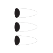
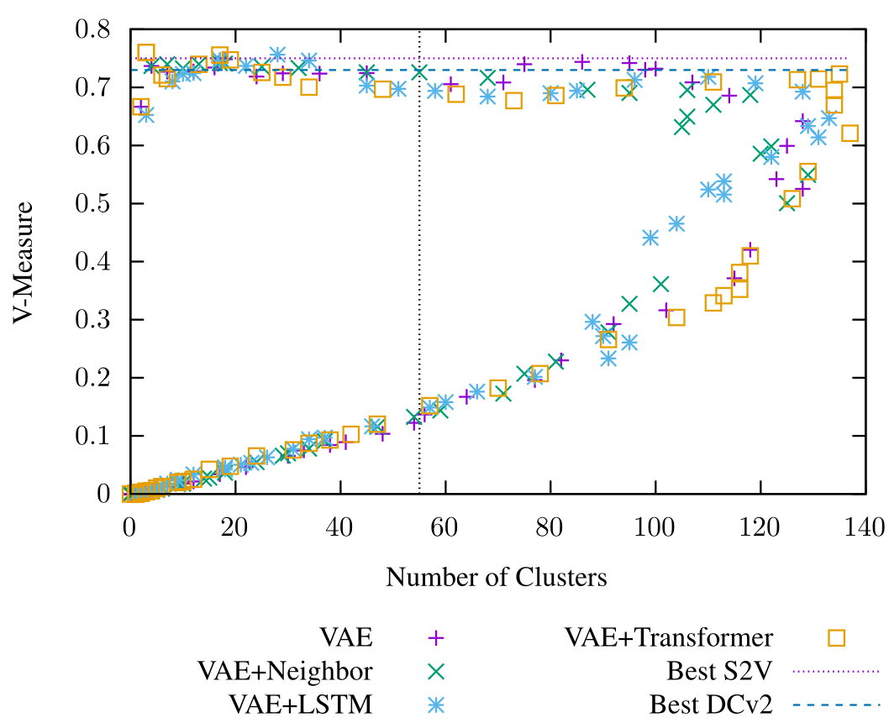
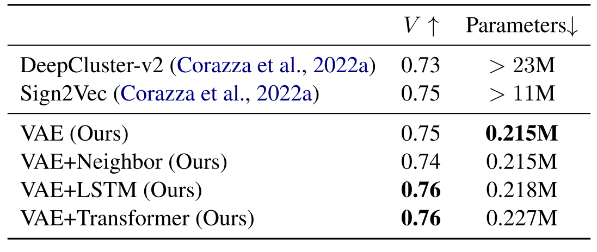
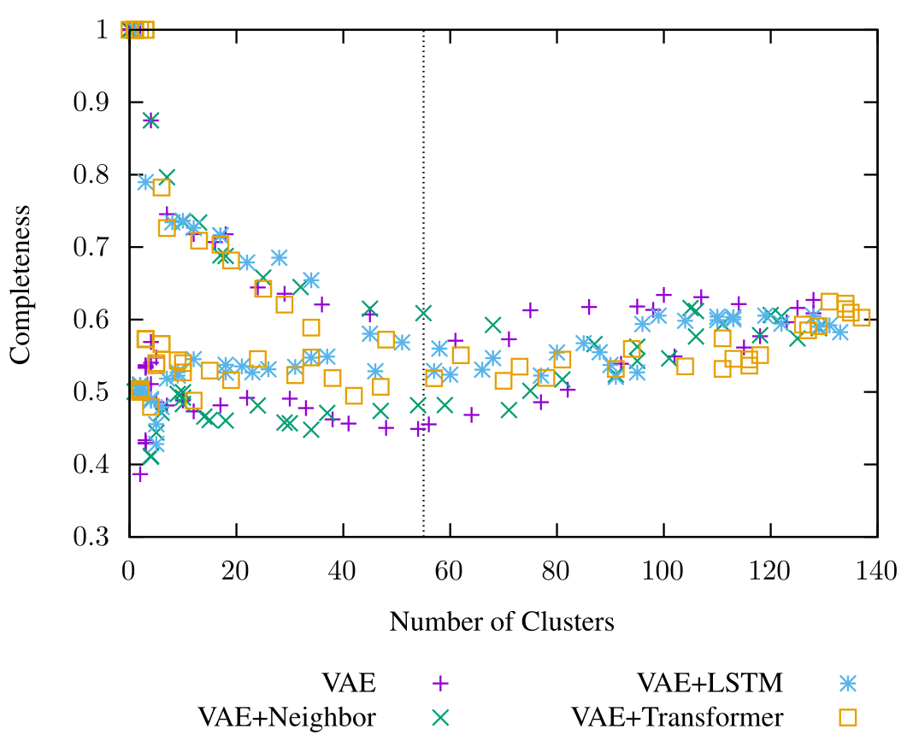
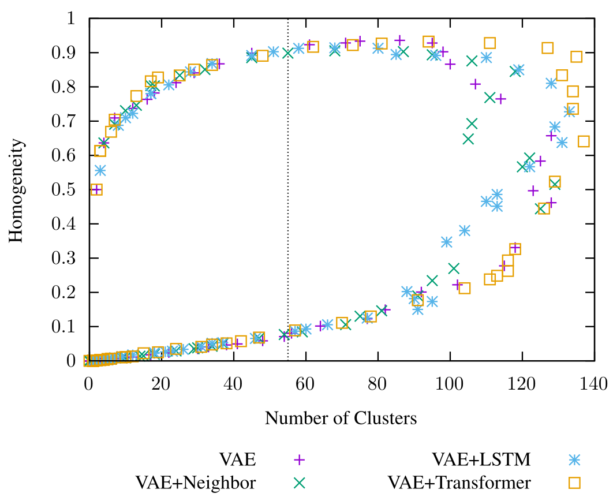

Learning the Character Inventories of Undeciphered Scripts using Unsupervised Deep Clustering
Logan Born M. Willis Monroe Kathryn Kelley Anoop Sarkar
&P008141 = MDP 06, 359
#atf: lang qpc
@tablet
@obverse
1. M157 ,
# header
2. M319 |M059+M038~a| M301~ea M002 , 1(N14) 1(N01)# 2(N39B)#
2B. M262#
#line inbetween 02. and 03.
3. M301~eb M002 , 1(N14) 3(N01) 2(N39B)
4. M262~1 M297 , 2(N01) 2(N39B)#?
5. M297~b M002 , 1(N14)
6. M218
#tr.en: (subscript)
$ (scribal design 1 = SDxxxx)
remains uncertain!
Same or different?
M175
M157
M157~a
- M157(~a) most common at start of documents, M175 in middle
- ...but all are attested in both locations!
How to tell if these are really distinct signs?
If they are distinct, how to tell if a given impression represents one or the other?
Prior Work: Sign2Vec
Corazza et al. 2022a, 2022bClusters contextual representations of sign images to obtain a signlist:
Combines soft neural clustering (DeepCluster-v2; Caron et al. 2018) with a deep convolutional image encoder trained on a character-level Cloze task
Apply hard DBSCAN clustering after training
Limitations
- Sign2Vec uses short, 2-character context windows
- Appropriate for Cypro-Minoan/Cypro-Greek sequences!
- Not appropriate for long-distance dependencies in PE (Born et al. 2022, 2023)
- Sign2Vec uses the ResNet18 encoder (He et al. 2016):
- Deep model created to encode complex photorealistic scenes
- Likely overkill for simple monochrome character images
- Want more efficient encoder:
- PE corpus is ~11 times as large as corpora used by Corazza et al. $\Rightarrow$ slow to train
- Wider context windows $\Rightarrow$ need to encode more images at once
- Bonus: lower monetary and environmental training costs, accessibility to groups without SOTA GPUs.
Variational Auto-Encoder (VAE)
Kingma & Welling 2013- Shallow encoder/decoder: 3 stacked convolutional layers
- Trained to reconstruct character images from dense bottleneck $z \sim \mathcal{N}(\mu, \sigma)$
VAE+Neighbor
- Adds auxiliary task of predicting central sign given adjacent signs.
- Same task as Sign2Vec, different output (image vs. pseudolabel)
VAE+LSTM
Adds autoregressive language modeling as auxiliary task:
VAE+Transformer
Adds masked language modeling as auxiliary task:
(6 layer/8 head/16 dim)
Data
Goal: apply to PE image sequences to assess working hypotheses about the sign list:
- Replace transcribed sign names with expert-produced vector images
- Expect multiple distinct images per underlying character
- More variation than a digital font, less than images of the original tablets

Evaluate performance on scripts with known character inventories:
English
Dotted line: true num. of underlying characters
Japanese
Dotted line: true num. of underlying characters
Cypro-Greek
 
Cypro-Greek
 
Proto-Elamite
-
Complex graphemes with same outer part
-
Tilde-variants with suspected equivalence
-
Visual and contextual parallels across multiple texts
- Occur with grain capacity signs, yokes, and other field utensils
- Clear agricultural parallels, even if not the same underlying sign